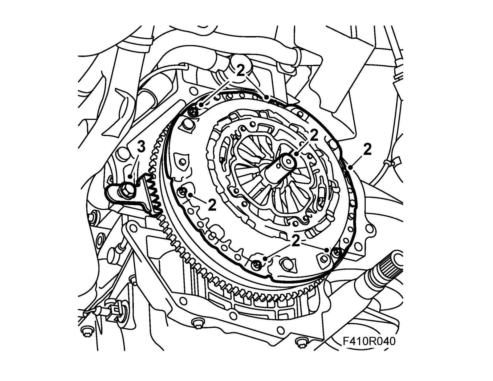

Clutch: Service and Repair
Clutch assemblyTo remove
1. Remove Gearbox assembly 6-speed or Gearbox assembly B207 4WD.
2. Secure the flywheel by fitting 83 94 868 Flywheel locking attachment or 83 92 987 Flywheel locking attachment for the Z19 in the threaded hole in the oil sump.
3. Remove the bolts holding the pressure plate and remove the clutch.
4. Check the contact surface of the driven plate in the flywheel.
5. Check the pressure plate for scratches and warping.
6. Check the release bearing for noise, wear and the like.
7. Check driven plate wear and change if necessary.
To fit
1. Position the driven plate and the pressure plate on the flywheel and loosely tighten the bolts. Vehicles with dual mass flywheel: The convex side of the driven plate should face the gearbox.

Important
Cars with self-adjusting pressure plate: Clutch plate and pressure plate are matched in pairs and must therefore be replaced as a pair.
2. Center the clutch plate B207: using 87 92 327 Mandrel for centering, clutch plate or man 6-speed: 83 96 277 Mandrel for centering, clutch plate, 6-speed gearbox and tighten the bolts alternately. Apply 74 96 268 Thread locking adhesive to the threads.
Tightening torque 30 Nm (22 lbf ft)
Tightening torque, Z18XE/F17 15 Nm (11 lbf ft)

3. Remove the flywheel locking attachment.
4. Fit Gearbox assembly 6-speed or Gearbox assembly, B207 4WD. Lubricate the primary shaft splines as specified in List of lubricants and sealants.